01
Problema
La observación se vuelve aburrida y monótona; hay mucho para observar y mucho para leer, y los padres suelen terminar explicándole todo a los chicos.
Oportunidad
Explotar los sentidos, haciendo el recorrido más inmersivo.
En sala
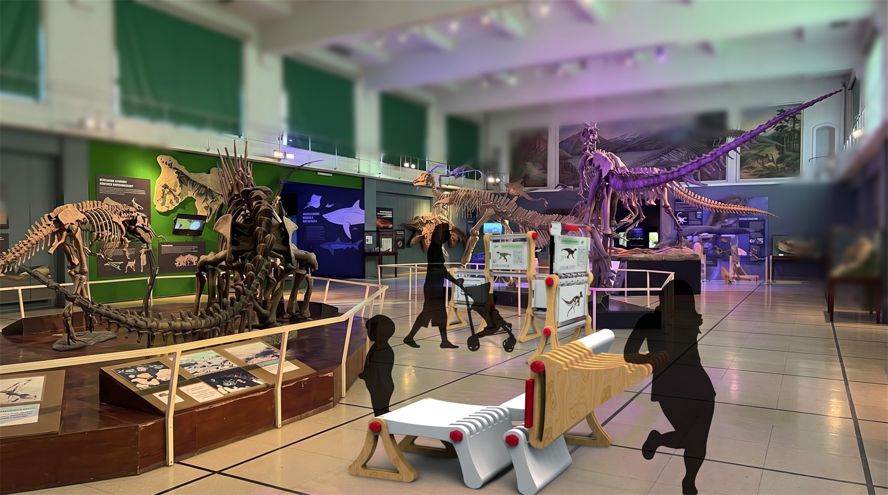
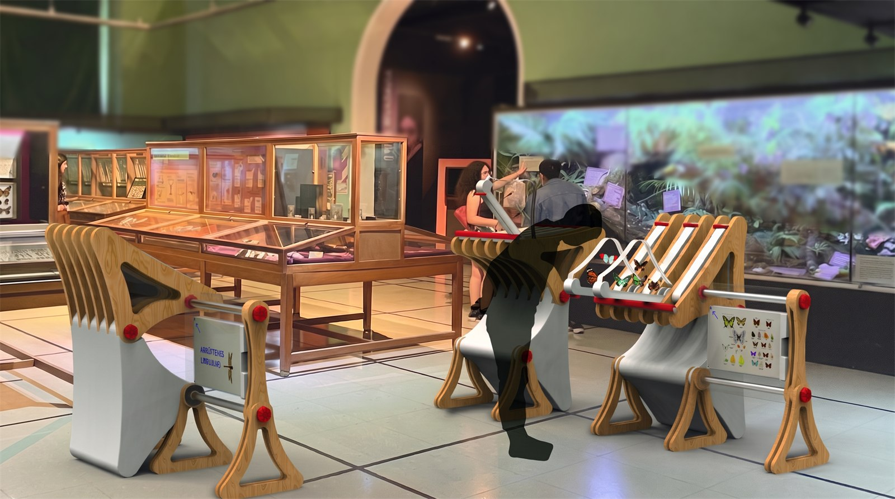
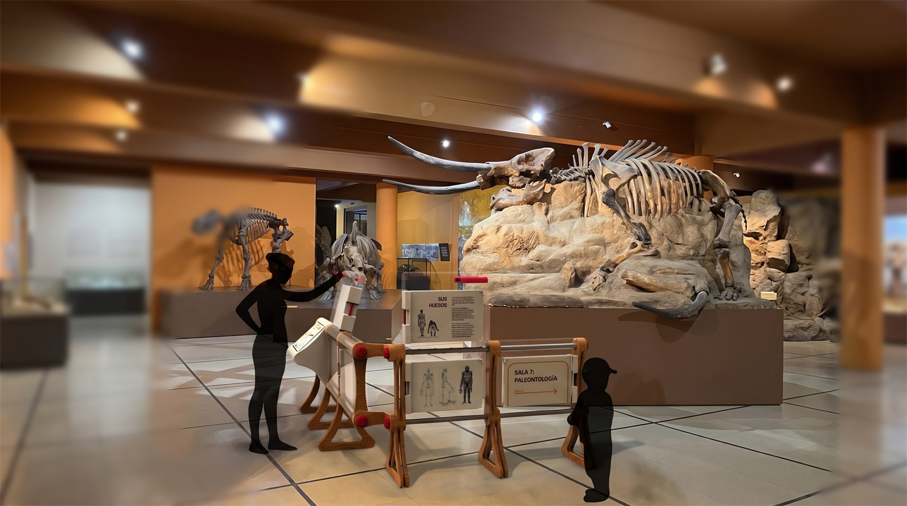
Investigación
01
Problema
La observación se vuelve aburrida y monótona; hay mucho para observar y mucho para leer, y los padres suelen terminar explicándole todo a los chicos.
Oportunidad
Explotar los sentidos, haciendo el recorrido más inmersivo.
02
Problema
Dificultad para apreciar detalles de lo expuesto, por mala luz, poca interacción y vidrio que no facilita la observación.
Oportunidad
Mejorar la visión con lupas, mejor iluminación, y más interacción directa con lo expuesto.
03
Problema
Se buscó aumentar el componente sonoro del recorrido sin éxito; en cambio se observó que el público se interesa mucho más en lo visual e interactivo que en lo auditivo.
Leyes del sistema · modular, componible y configurable; conexión por ejes comunes. Madera terciada, inyección de plástico e inyección de polipropileno cristal.
De estos insights nace la idea rectora del proyecto: el mobiliario tiene que sostener, mostrar y acompañar al mismo tiempo. Sin estructura, no hay experiencia.
Observación de campo
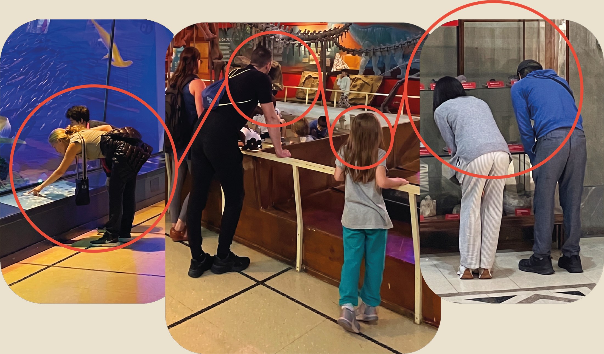
Sistema 01
Momento de observación más pasiva, versátil, con puntos y ángulos de vista diversos.
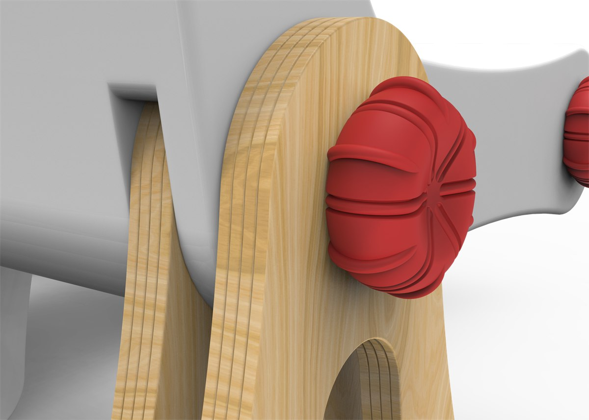


01 / 03
Cargando el asiento
0%
Sistema 02
Acerca piezas pequeñas a la altura y distancia que elige el usuario, con cajones que se abren en abanico para observar de cerca.
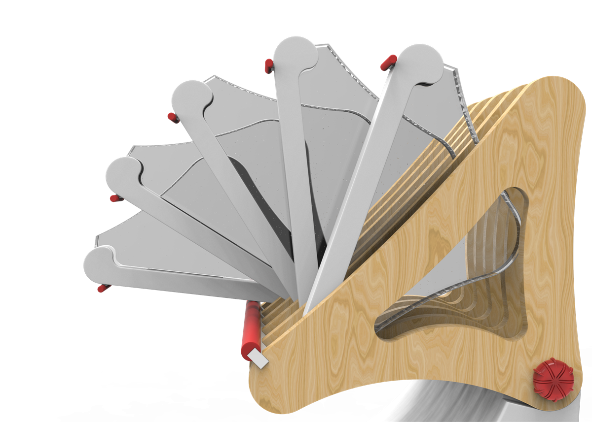
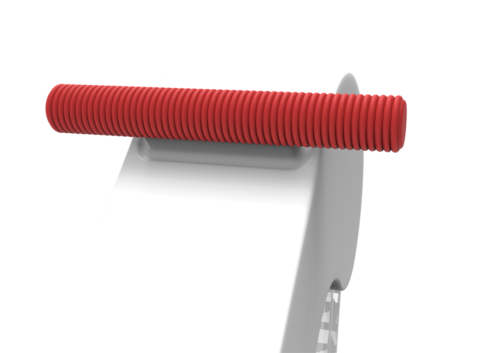
01 / 03
Cargando el módulo
0%
Sistema 03
Guía el recorrido con paneles giratorios, ofreciendo distintos niveles y velocidades de lectura.
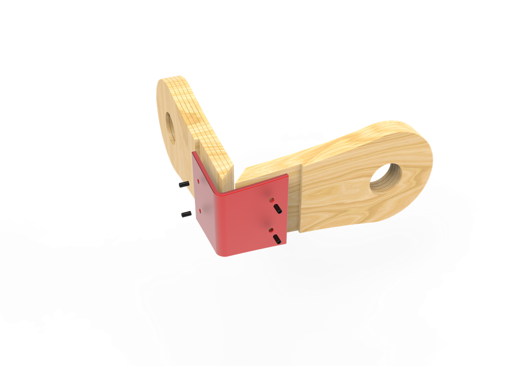
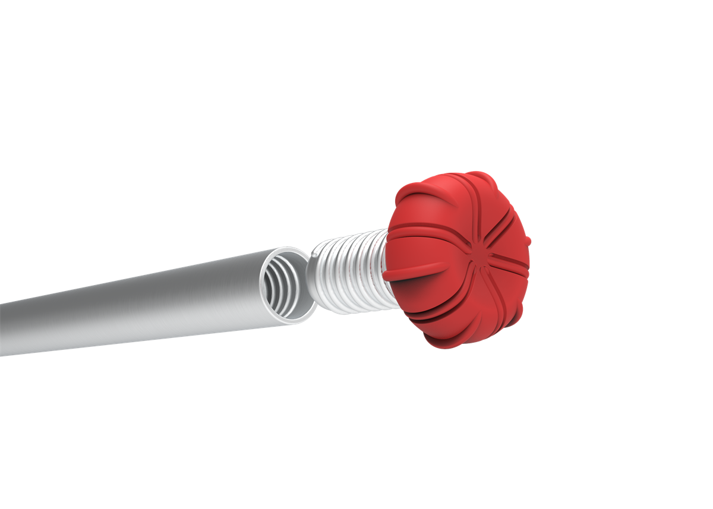
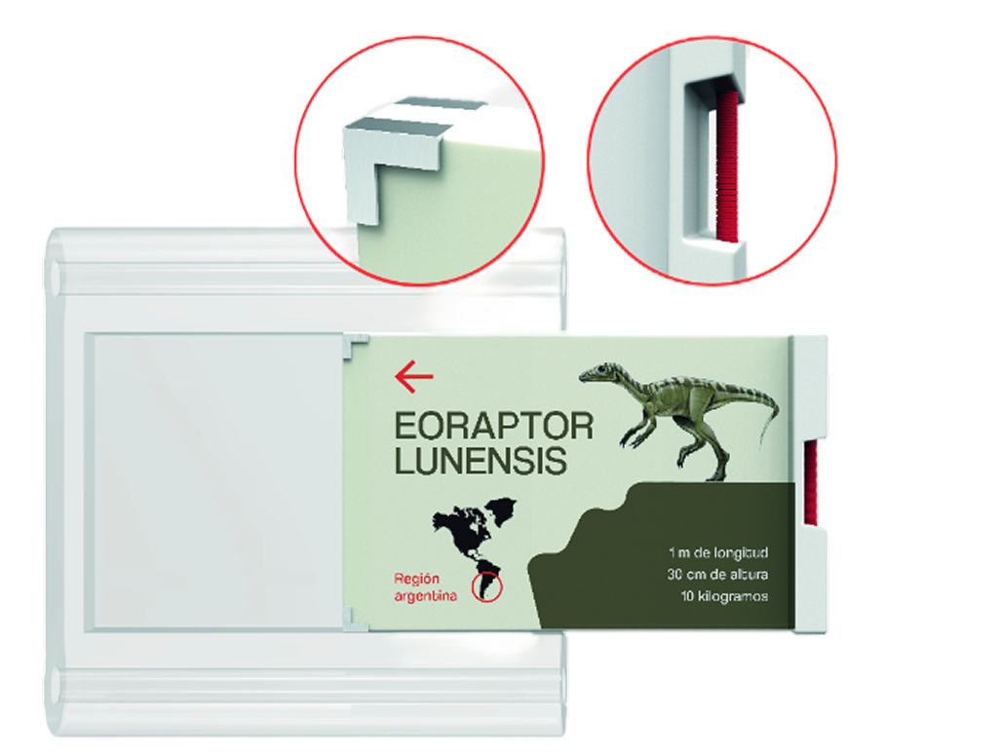
01 / 03
Cargando los paneles
0%
Todas las partes del sistema
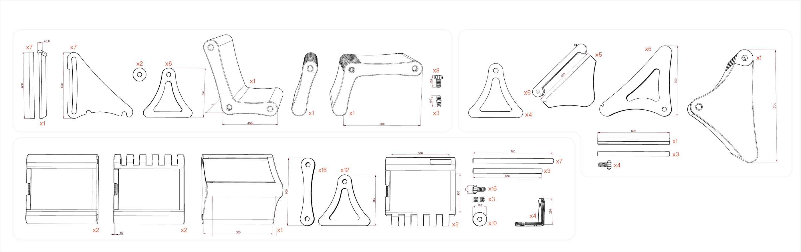